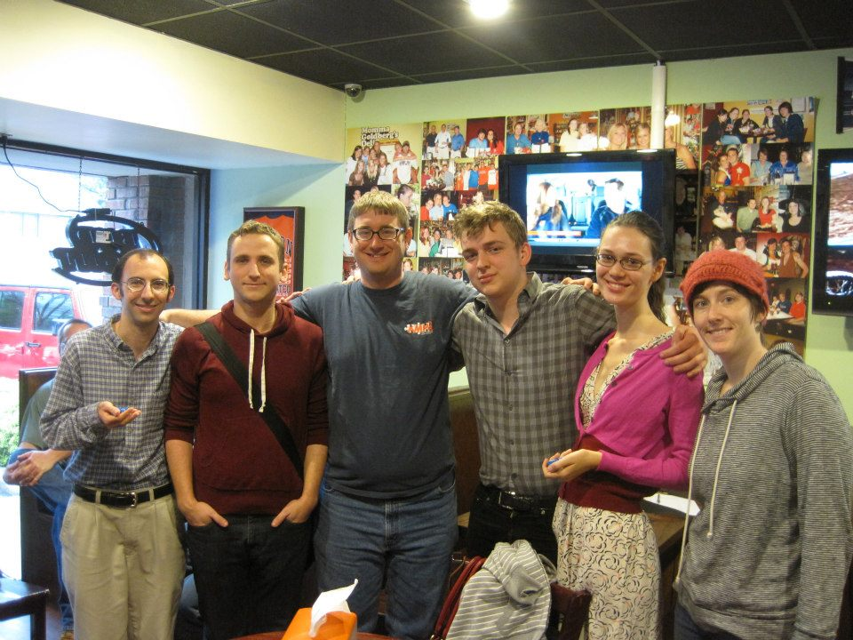
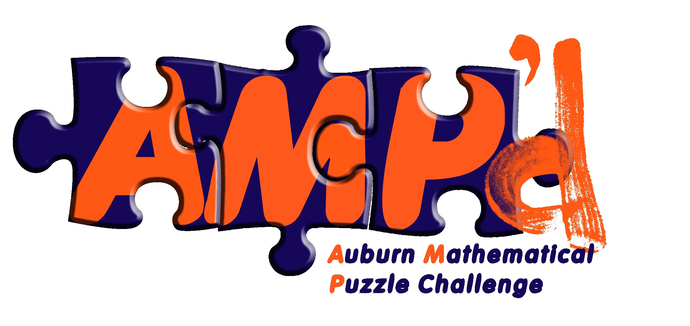

I’m active in the puzzle community in Auburn, so much so that I made the wiki!
What do you mean by “puzzles”?
Well, not jigsaw puzzles…
There’s a fourteen-character message hidden in the video above, which refers to a location on or near Auburn University’s campus. Have fun!
What’s so cool about puzzles?
It’s what I studied in school. I came to puzzles as a mathematician, because mathematics is the art of problem solving, and puzzle design is the art of creating fun problems to solve.
Puzzlehunts
While I’m a fan of the typical Sudoku puzzle or word jumble, I’m particularly interested in puzzlehunts: large-scale events which involve teams of players solving puzzles, which can end up sending them across an entire campus or town to find the solution or next puzzle.

I played and won my first Auburn Puzzle Party in 2009, and lead a team of puzzle designers to create Auburn Puzzle Parties 4 and 5 from 2010-2012. My teams have won three “trophies” competing in roughly bi-annual Auburn-area puzzle events, placing me in the top 13 of over 300 players. Of the players who joined the community since I did in Fall 2009, I’m tied for first.
Teaching math with puzzles
Due to my puzzle designing experience, I was asked in 2011 to co-create the first Auburn Mathematical Puzzle (AMP’d) Challenge. Our goal was to expose non-standard mathematical topics such as game theory or number theory to middle school students, well before they’d normally get the chance to encounter them formally in a post-secondary setting (if ever). More importantly, we wanted to present mathematics as critical thinking and problem solving in a fun enviornment.

We embraced the pedagoical philosophy known as Inquiry Based Learning. Rather than teaching students a formal mathematical theory, we structured our mathematical “Challenges” so that they could develop a theory of their own. With our graduate student volunteers to provide guidance, players asked themselves and each other questions which naturally helped them solve their problems. By following up with advanced “EXTRA Challenges”, they then were forced to generalize their solutions, and often, develop formulas or theorems which could apply to any number of puzzles.
Through the AMP’d Challenge, we redefined mathematics in our students eyes. Math isn’t a list of formulas and algorithms to memorize: it’s field of puzzles and games to explore and solve. Not only that, but it was a great way to introduce students to Auburn University’s campus, i.e. a great recruiting tool.
Puzzlehunt Consulting
If you are interested in running a puzzlehunt, mathematical or otherwise, for your own school or organization, please shoot me an email! I’d love to work with your team to bring this kind of fun puzzle challenge to your campus.